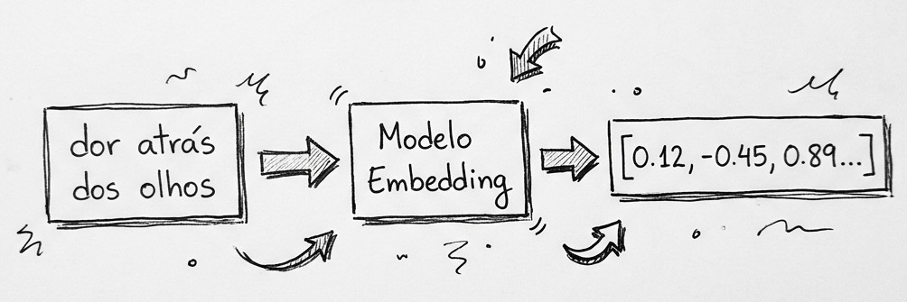
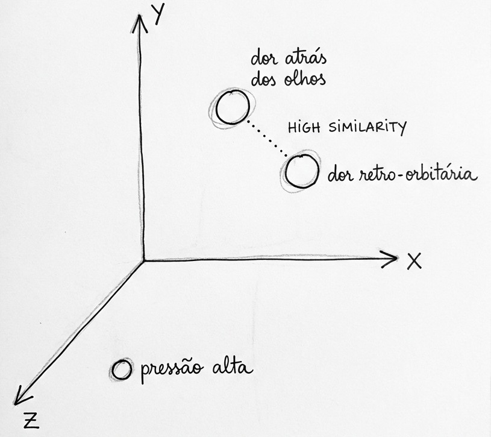

Imagine alguém em casa, no terceiro dia de febre, digitando no celular: "dor atrás dos olhos e manchas vermelhas no corpo". A resposta existe. Está no protocolo de manejo clínico da dengue, que descreve exatamente esse quadro como dor retro-orbitária e exantema. Mas uma busca por palavras não liga uma coisa à outra. O problema não é falta de informação. É que o paciente e quem escreveu o protocolo usam palavras diferentes para dizer a mesma coisa.
Arboviroses são um tema que me acompanha há anos na pesquisa, e essa distância entre a língua de quem sente e a língua de quem trata sempre me chamou atenção. É um dos melhores exemplos que conheço de por que buscar só por palavras não basta.
Tenho trabalhado bastante com esse problema nos últimos meses, e resolvi transformar o que venho aprendendo numa série de posts sobre busca semântica: buscar pelo significado, e não só pelas palavras. Este é o primeiro, e começa pela peça que sustenta todo o resto: o embedding.
Série: busca semântica, do zero à produção. 1. O que é um embedding (este post) · 2. Como um modelo aprende a gerar embeddings · 3. Buscando de verdade: similaridade e índices vetoriais · 4. BM25 não morreu: busca híbrida e reranking · 5. Como saber se a busca está boa · 6. Um benchmark de modelos em português · 7. Do protótipo à produção
O limite da busca por palavras
A busca tradicional, a que está por trás da maioria dos campos de pesquisa que usamos, funciona mais ou menos assim: quebra o texto em palavras, conta quais aparecem em cada documento e dá mais peso às palavras raras. Funciona muito bem, é rápida e, como vamos ver no quarto post, ainda é difícil de bater em vários cenários.
Mas ela tropeça em três situações bem comuns:
- Sinônimos e paráfrases: "dor atrás dos olhos" e "dor retro-orbitária" descrevem a mesma coisa sem uma palavra em comum.
- Palavras iguais com sentidos diferentes: "pressão" pode ser a arterial ou a do chefe no trabalho.
- Perguntas em linguagem natural: "minha barriga dói muito e não paro de vomitar, é grave?" contra um texto chamado "Sinais de alarme na dengue".
O que a gente quer é uma forma de representar o texto que capture o significado. Aí entram os embeddings.
Texto vira coordenada
Um embedding é uma lista de números que representa um texto. Algo como [0.12, -0.45, 0.89, ...], com algumas centenas ou milhares de números. A ideia central é simples: textos com significados parecidos viram listas de números parecidas.

Uma forma de visualizar isso é imaginar um mapa. Cada texto vira um ponto nesse mapa, e o modelo de embeddings é quem decide onde colocar cada ponto. Um bom modelo coloca "dor atrás dos olhos", "dor retro-orbitária" e "dor ao mexer os olhos" bem perto uns dos outros, e bem longe de "pressão alta".

A diferença para um mapa de verdade é que ele não tem duas dimensões, tem centenas. Não dá para desenhar, mas a matemática funciona igual: dá para medir a distância entre dois pontos. E buscar passa a ser isso. Você transforma a pergunta em um ponto e procura os documentos que estão mais perto dela.
Um exemplo com três dimensões
Para ficar concreto, vou inventar um modelo bem simplificado, com só três números por texto. Cada número mede o quanto o texto fala de um assunto: arbovirose, quadro respiratório e quadro cardiovascular.
| Texto | arbovirose | respiratório | cardiovascular |
|---|---|---|---|
| "Dengue: febre alta, dor retro-orbitária e exantema" | 0.9 | 0.1 | 0.0 |
| "Síndrome gripal: febre, tosse e coriza" | 0.1 | 0.9 | 0.0 |
| "Hipertensão arterial na atenção primária" | 0.0 | 0.0 | 0.95 |
| Pergunta: "dor atrás dos olhos e manchas vermelhas no corpo" | 0.8 | 0.2 | 0.0 |
Repare que a pergunta tem um pouquinho de "respiratório": quem está com febre pode estar com muita coisa, e o modelo não tem certeza absoluta. Nenhuma palavra da pergunta aparece no texto sobre dengue, mas os números dos dois são quase iguais. Para medir essa semelhança, a medida mais usada é a similaridade de cosseno: ela compara a direção dos dois vetores e vai de −1 (opostos) a 1 (mesma direção). Fazendo a conta:
- pergunta × dengue: 0.99
- pergunta × síndrome gripal: 0.35
- pergunta × hipertensão: 0.00
O texto certo fica em primeiro, sem nenhuma palavra em comum com a pergunta. Os modelos reais fazem exatamente isso, só que ninguém escolhe à mão o que cada dimensão significa: o modelo aprende sozinho, a partir de muitos exemplos, e as dimensões não têm um nome que a gente consiga ler. Como esse aprendizado acontece é o assunto do próximo post.
Um pouco de história, bem rápido
A ideia é mais antiga do que parece. Em 1957, o linguista J. R. Firth resumiu a chamada hipótese distribucional numa frase que virou lema da área: "you shall know a word by the company it keeps", ou seja, você conhece uma palavra pelas companhias que ela tem. Palavras que aparecem em contextos parecidos tendem a ter significados parecidos. Os embeddings são, no fundo, essa ideia transformada em conta.
Em 2013, o word2vec mostrou que dava para aprender vetores para palavras a partir de texto comum, e ficou famoso pela conta "rei − homem + mulher ≈ rainha". O problema é que cada palavra tinha um vetor só, então "banco" era sempre o mesmo ponto, fosse de praça ou de dinheiro.
Em 2018 veio o BERT, que gera representações que dependem do contexto: a mesma palavra ganha vetores diferentes em frases diferentes. E em 2019 o Sentence-BERT mostrou como treinar esses modelos para gerar um vetor por frase inteira, pronto para comparar. No português, o NILC-USP publicou em 2017 um conjunto de embeddings de palavras treinados em textos brasileiros e europeus, e em 2020 a NeuralMind lançou o BERTimbau, um BERT treinado para o português do Brasil. Boa parte dos modelos de embeddings abertos disponíveis hoje, como o bge-m3, a família multilingual-e5 e o Qwen3-Embedding, descende dessa linha. Vários deles vão aparecer no benchmark do post 6.
Mão na massa
Chega de teoria. O código abaixo usa a biblioteca sentence-transformers e um modelo pequeno e multilíngue que funciona bem em português. Roda num notebook comum ou no Google Colab (pip install sentence-transformers):
from sentence_transformers import SentenceTransformer
modelo = SentenceTransformer("intfloat/multilingual-e5-small")
documentos = [
"Dengue: febre alta, dor retro-orbitária, dor muscular e exantema",
"Sinais de alarme na dengue: dor abdominal intensa, vômitos persistentes e sangramento de mucosas",
"Chikungunya: febre e dor intensa nas articulações, que pode durar meses",
"Síndrome gripal: febre, tosse, coriza e dor de garganta",
"Hipertensão arterial: diagnóstico e acompanhamento na atenção primária",
]
pergunta = "dor atrás dos olhos e manchas vermelhas no corpo"
# este modelo espera os prefixos "query:" e "passage:"
docs_vec = modelo.encode(["passage: " + d for d in documentos], normalize_embeddings=True)
perg_vec = modelo.encode("query: " + pergunta, normalize_embeddings=True)
similaridades = docs_vec @ perg_vec # com vetores normalizados, isso já é o cosseno
for doc, sim in sorted(zip(documentos, similaridades), key=lambda x: -x[1]):
print(f"{sim:.3f} {doc}")Quando rodei aqui, o resultado foi este:
0.873 Dengue: febre alta, dor retro-orbitária, dor muscular e exantema
0.867 Chikungunya: febre e dor intensa nas articulações, que pode durar meses
0.866 Sinais de alarme na dengue: dor abdominal intensa, vômitos persistentes e sangramento de mucosas
0.855 Síndrome gripal: febre, tosse, coriza e dor de garganta
0.843 Hipertensão arterial: diagnóstico e acompanhamento na atenção primáriaA ordem faz sentido: dengue em primeiro, chikungunya logo atrás (outra arbovirose, também com febre e dor) e hipertensão por último. Mas repare nos números: estão todos entre 0,84 e 0,87, bem longe do 0,99 contra 0,00 do exemplo inventado lá em cima, com três dimensões. Isso não é defeito. Os modelos e5 foram treinados de um jeito que espreme as similaridades numa faixa estreita, perto de 0,7 a 1,0, e os próprios autores avisam isso no FAQ do modelo. Cada modelo tem a sua "escala", então um valor como 0,85 não quer dizer nada sozinho.
Mais três coisas para reparar. Primeiro, cada documento virou um vetor de 384 números (docs_vec.shape mostra isso). Segundo, os prefixos query: e passage:: esse modelo foi treinado assim, e cada família de modelos tem sua convenção, um detalhe que faz diferença de verdade e que volta no próximo post. Terceiro, e mais importante: na busca, o que interessa é a ordem, e não o número absoluto. Aqui a ordem saiu certa, mas com uma margem pequena entre os primeiros colocados. Com outros modelos a escala e a margem mudam, e comparar vários deles em português é o assunto do post 6.
Vale brincar um pouco: troque a pergunta por "minha barriga dói muito e não paro de vomitar", "meus joelhos e punhos doem demais depois da febre" ou "tô com tosse e nariz escorrendo" e veja o ranking mudar.
Os exemplos de saúde deste post são didáticos e simplificados. Não são orientação médica: diante de sintomas, procure um serviço de saúde haha.
O que embeddings não resolvem
Seria desonesto terminar sem as limitações, porque elas são o gancho para o resto da série:
- Nomes, códigos e termos exatos. Quem busca "CID A90" quer aquele código exato, e a busca por palavras costuma se sair melhor. Por isso tanta gente combina as duas (post 4).
- Similar não é o mesmo que relevante. "Dengue com sinais de alarme" e "dengue sem sinais de alarme" ficam muito perto no mapa, mas a conduta clínica de um e de outro é bem diferente. Um erro aqui não é só um resultado ruim de busca.
- O modelo importa, e o idioma também. Um modelo treinado só em inglês vai mal em português, e modelos maiores são melhores mas mais lentos e caros. Medir isso em português é justamente o objetivo do post 6.
Para fechar
Se tiver que guardar uma frase deste post, é esta: um embedding transforma significado em geometria. Textos parecidos viram pontos próximos, e buscar vira procurar vizinhos. Todo o resto da série (treinar, indexar, combinar, avaliar e colocar em produção) é sobre fazer isso funcionar bem, rápido e em escala.
No próximo post a gente abre a caixa: como um modelo aprende onde colocar cada ponto, e por que nem todo modelo de linguagem serve para isso.
Para ir mais fundo
Separei o que li (e reli) para escrever este post, com uma linha sobre por que vale a pena.
Livros
- Jurafsky, D.; Martin, J. H. Speech and Language Processing, 3ª ed. (rascunho, 2026), cap. 5, "Embeddings". Online e gratuito. A melhor explicação didática que conheço de vetores, cosseno e word2vec. O cap. 11 ("Information Retrieval and RAG") vai servir para os próximos posts.
- Manning, C. D.; Raghavan, P.; Schütze, H. Introduction to Information Retrieval. Cambridge University Press, 2008. Online e gratuito. O clássico da recuperação de informação: modelo vetorial, TF-IDF e avaliação. Anterior aos embeddings neurais, mas a base continua a mesma.
Artigos
- Mikolov, T. et al. Efficient Estimation of Word Representations in Vector Space. 2013. O artigo do word2vec.
- Devlin, J. et al. BERT: Pre-training of Deep Bidirectional Transformers for Language Understanding. NAACL, 2019. Representações que dependem do contexto.
- Reimers, N.; Gurevych, I. Sentence-BERT: Sentence Embeddings using Siamese BERT-Networks. EMNLP, 2019. Como sair de um vetor por palavra para um vetor por frase, pronto para busca.
- Wang, L. et al. Multilingual E5 Text Embeddings: A Technical Report. 2024. O relatório do modelo usado no exemplo, curto e direto.
Em português
- Ministério da Saúde. Dengue: diagnóstico e manejo clínico: adulto e criança. 6. ed., 2024. A fonte dos termos clínicos usados nos exemplos, e um bom retrato de como o texto técnico se distancia da fala do paciente.
- Hartmann, N. et al. Portuguese Word Embeddings: Evaluating on Word Analogies and Natural Language Tasks. STIL, 2017. Os embeddings do NILC-USP para o português, com os vetores disponíveis no GitHub.
- Souza, F.; Nogueira, R.; Lotufo, R. BERTimbau: Pretrained BERT Models for Brazilian Portuguese. BRACIS, 2020. O BERT brasileiro; os modelos estão no Hugging Face.
Blogs e documentação
- Alammar, J. The Illustrated Word2vec. O texto mais visual sobre embeddings de palavras; ótimo para quem aprende vendo.
- Sentence Transformers. Semantic Search. A documentação da biblioteca usada no exemplo, com a diferença entre busca simétrica e assimétrica (o motivo dos prefixos
query:epassage:).